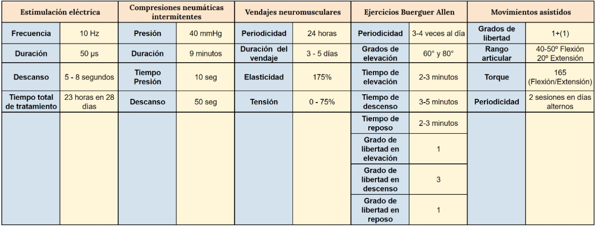

“El verdadero signo de la inteligencia no es el conocimiento, sino la imaginación” -Albert Einsten
¿Qué parametros debemos tomar en cuenta?

Estrategias de solución
Por qué elegimos la estrategia basada en los ejercicios de buerguer allen
El mecanismo de los ejercicios de Buerger utiliza cambios gravitacionales en las posiciones que se aplican a la musculatura de los vasos y la vascular. La gravedad ayuda alternativamente a vaciar y llenar columnas de sangre, que eventualmente puede aumentar el transporte de sangre a través de ellos. [1] Los ejercicios de Buerger Allen han demostrado ser eficientes en la reducción de necrosis, dolor, hinchazón y cianosis, asimismo, gracias a su capacidad de aumentar el transporte de sangre, se reduce la estasis venosa evitando un factor desencadenante de trombosis venosa profunda.
Diversos estudios han demostrado que combinando ejercicios de dorsiflexión y plantarflexion en conjunto con movimientos secundarios como eversión e inversión subtalar dan como resultado un aumento del 38% en la velocidad media y del 58% en las velocidades de flujo máximo sanguíneo. [2] Asimismo, cuando se realizan movimientos de dorsiflexión y plantarflexion la hemodinámica venosa femoral aumenta significativamente en comparación con el estado de reposo. Este estudio denotó que el movimiento activo de dorsiflexión de 30° del tobillo, aumenta la hemodinámica venosa femoral, lo que aumenta la frecuencia inmediata, reduce la estasis venosa y contribuye al retorno sanguíneo. [3]
[1] Jackson, B.S. (1972) Chronic Peripheral Arterial Disease. American Journal of Nursing, 72, 928-934. [2] Sochart DH (1999) The relationship of foot and ankle movements to venous return in the lower limb. J Bone Joint Surg Br. 81(4):700-4 [3] Pi H (2018) Influence of Ankle Active Dorsiflexion Movement Guided by Inspiration on the Venous Return From the Lower Limbs: A Prospective Study. J Nurs Res. 26(2):123-129